壬午日
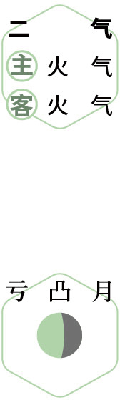
 食艾
食艾暮春｜节气｜ 清明 ｜时间｜ 四月四日至四月二十日
今年清明需特别注意的健康问题：上火、过敏、失眠、咳嗽、发热、传染病
原料：野艾或田艾（清明菜）、糯米粉、红糖。
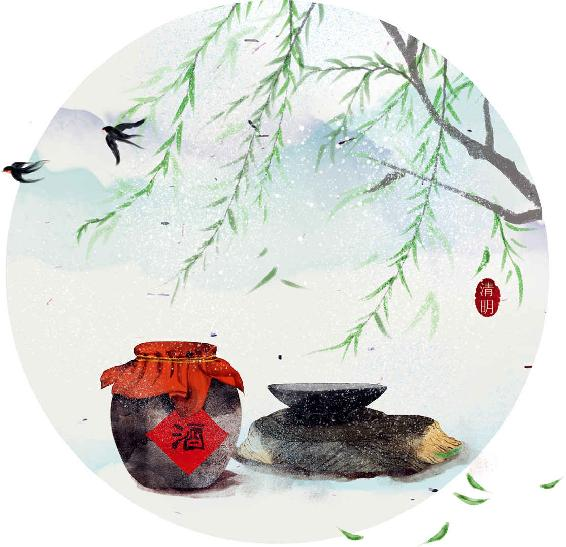
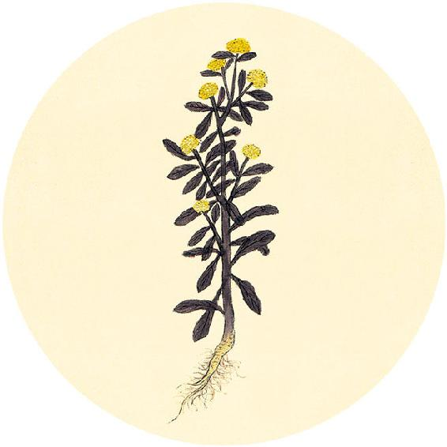
节日食方
清明节的传统美食：清明果/艾粑
原料：野艾或田艾（清明菜）、糯米粉、红糖。
做法：
1. 采摘新鲜田艾的嫩尖，切碎，剁成茸。
2. 水烧开，放入田艾，不要盖锅盖，大火煮30分钟，加入红糖化开，关火。
3. 将煮田艾连同锅里的水趁热与糯米粉混合，用筷子搅拌，等到不烫手时，用手揉匀成团。
4. 搓成长条，切成段，一个个揉成椭圆形，用大火蒸20分钟。
5. 晾凉后放冰箱可以保存几天。
功效：调中益气，祛水肿，止白带，解毒。
夫色之变化，以应四时之脉。（据《黄帝内经太素》，另一版本为：夫色脉之变化，以应四时之胜。——允斌注）
——黄帝内经·素问·移精变气论
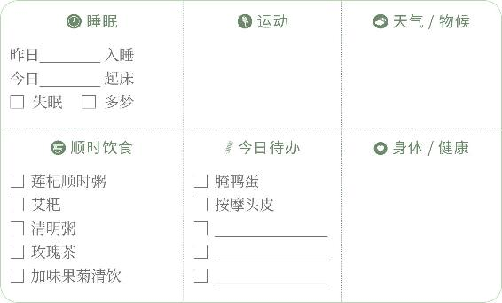

食艾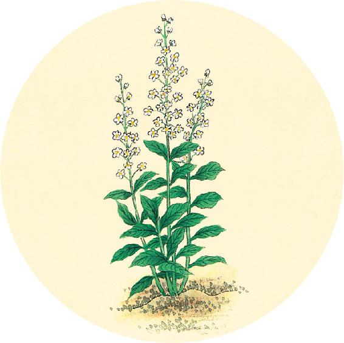
二十四节气茶养生
今年清明节气品茶推荐：玫瑰茶。
春季调肝可以常饮玫瑰。玫瑰能平肝火，却不凉，而是偏温性的。它能理肝血、解肝郁，使肝火自灭，玫瑰对肝有双向调节的作用。
肝气升发过度、脾气暴躁、肝火大的人，玫瑰茶能平息肝火；肝气升发不足、肝气郁结、情绪抑郁的人，喝玫瑰茶能疏解肝气、舒展心情。
（4月6日继续）
【释义】气色的变化，与四时的脉息是相应的。（另一版本：气色与脉息的变化，与四时的和气是相应的。）
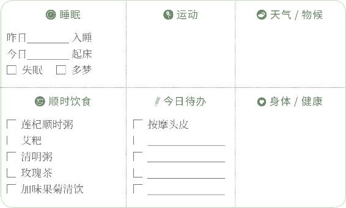
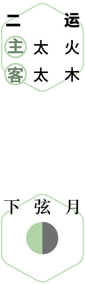
踏青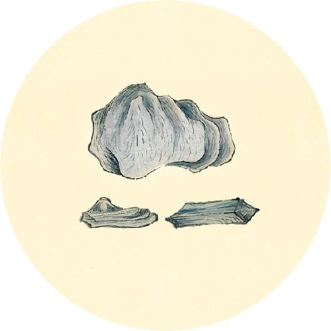
二十四节气茶养生
今年清明节气品茶推荐：玫瑰茶。
女性饮用玫瑰的好处：可以缓解生理周期引起的经痛、腹痛、头痛，让气色变好。
男性饮用玫瑰的好处：可以减压，清新口气，唤醒脾胃功能，有利于预防高血脂、脂肪肝。
玫瑰可以跟各种花草茶搭配同饮。搭配月季、青皮、陈皮，有利于预防乳腺增生和黄褐斑。
中古之治病，至而治之。
——黄帝内经·素问·移精变气论

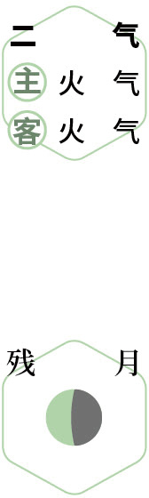
腌鸭蛋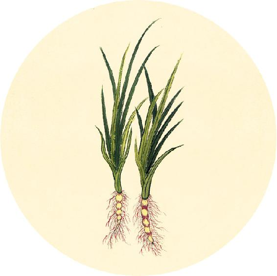
健康提示
清明节气的养生功课：饮食排毒。
今年清明特殊的养生要点——
今年清明节气，雨水可能较多，注意防湿气和病毒感染。
保养重点：肠、皮肤、免疫系统。
容易出现的问题：上火、过敏、失眠、咳嗽、发热、传染病。
【释义】中古时代的医生治病，疾病发生了才去治疗。（这里是点评中古时代的医生，不如上古时代的神医，能通过察色按脉，提前发现疾病隐患，治未病。——允斌注）
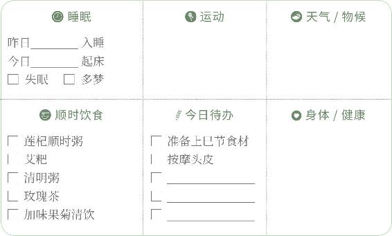
侯雨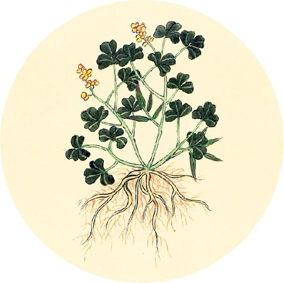
健康提示
从清明开始进入春天的第三个月，也就是暮春。
本月养生关键词：护生、排毒。
上半月重点：清肝。
下半月重点：养脾。
这个月阳气外泄，也是各种病毒活跃的时期。春季的呼吸道疾病，这个时候容易进入高发期。
调理方法：见4月9日。
暮世之治病也则不然，治不本四时，不知日月，不审逆从，病形已成，乃欲微针治其外，汤液治其内，粗工兇兇，以为可攻，故病未已，新病复起。
——黄帝内经·素问·移精变气论
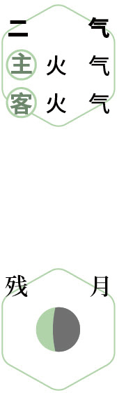
防病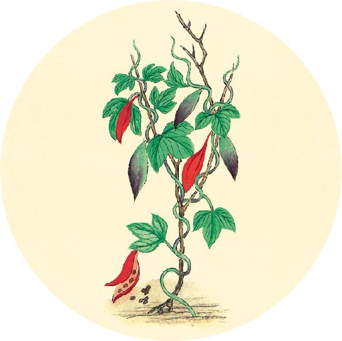
一候反思
今年是否出现过以下问题：
咳嗽 □ 是 □ 否 痰多 □ 是 □ 否
发热 □ 是 □ 否 慢性支气管炎 □ 是 □ 否
以上任何一个答“是”，按以下方法调理：
1. 用清温手心贴贴手心和脚心（配方和用法见11月1日）。
2. 用中药吴茱萸打粉贴敷双脚内侧公孙穴，左右各一贴，每日睡前贴，贴一夜。
3. 喝加味果菊清饮日常调理（配方见3月30日）。
4. 咳嗽超过一个月，在果菊清饮中加入柿子蒂3个（见4月10日）。
【释义】后世医生治病就不这样了，治疗不根据四时的变化，不了解色、脉的重要，不辨别色、脉的顺逆，等到病症已经明显了，才想用微针从外治，用汤液从内治，医术粗疏，还大肆吹嘘，自以为能治愈，结果本来的病没治好，又添上了新病。
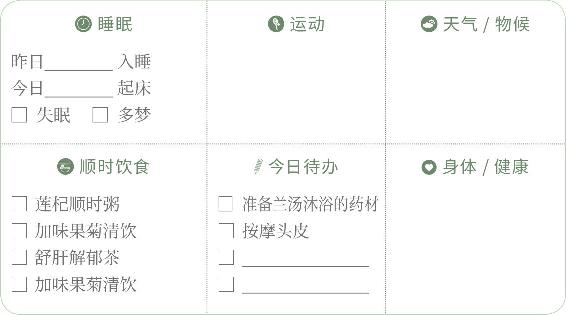
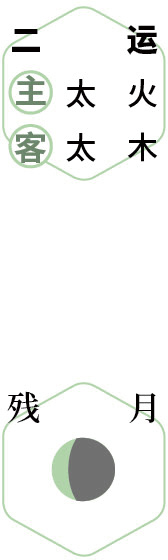
听风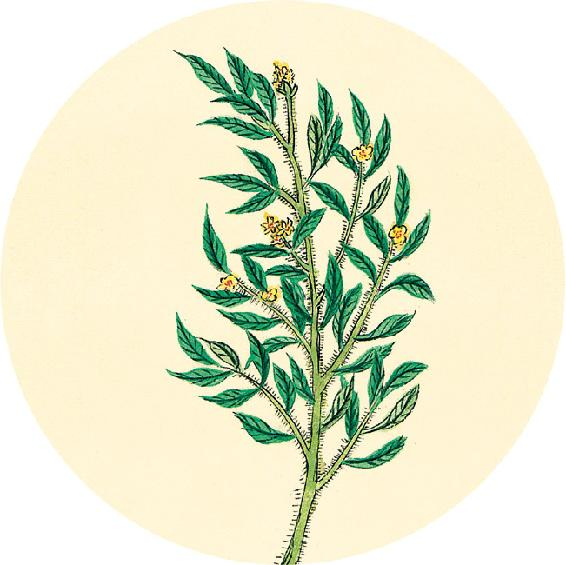
健康提示
什么是百日咳？
百日咳是一种传染病，是由百日咳病毒引起的咳嗽。染病的人会长时间咳嗽不止。儿童容易被传染到百日咳。
另外，对于一些久咳，咳了两三个月还不好的咳嗽，人们有时也泛称为“百日咳”。
这两种长期咳嗽，都可以用果菊清饮加上柿子蒂来调理。
治之要极，无失色脉，用之不惑，治之大则。
——黄帝内经·素问·移精变气论
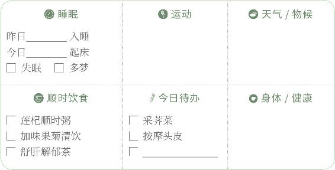
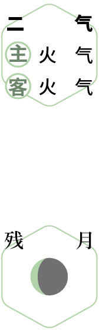
花前饮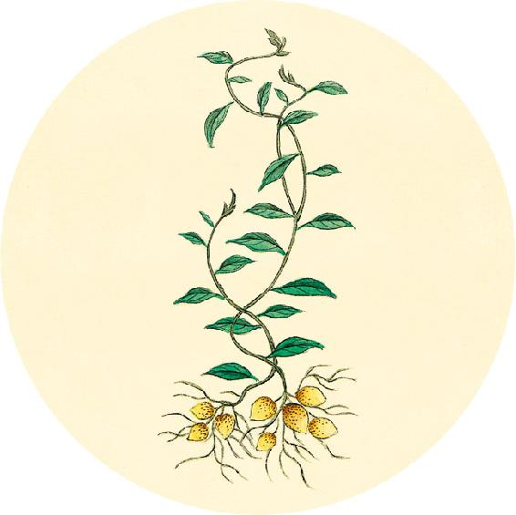
健康提示
世界帕金森病日
帕金森病俗名“震颤麻痹”。患病的人会出现一系列运动障碍的症状，例如手抖、四肢不灵活、动作缓慢，还可能出现抑郁、焦虑等心理症状。
高血压的人，服用利血平类降压药要特别谨慎，有引起帕金森综合征的风险。
饮食保健：甘麦大枣汤（见12月18日）。
【释义】治病最重要的，在于不脱离色诊脉诊，能明白地运用，这就是诊治的重要原则。
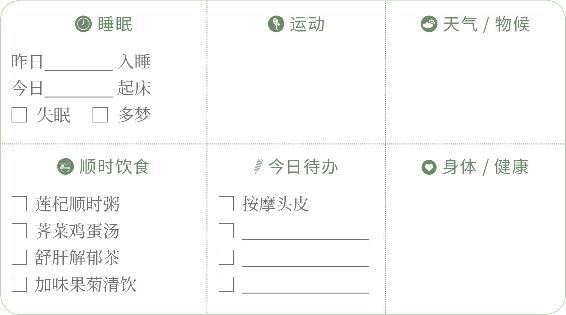
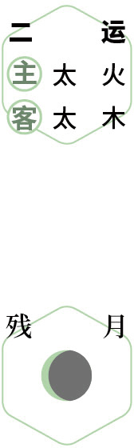
思亲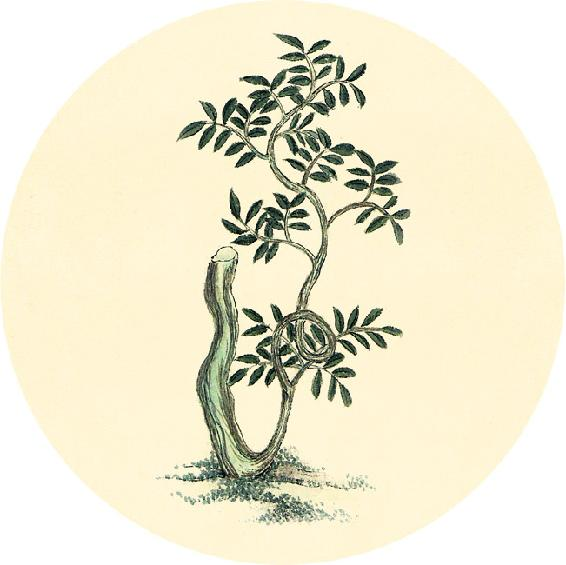
健康提示
清明后腌鸭蛋。这个时节的鸭蛋最饱满，营养好。现在腌制，到端午节正好可以吃。
原料：一小碗白酒、一碟盐。
做法：
1. 将鸭蛋放酒里沾湿。
2. 把蛋全身沾上盐。
3. 装干净饭盒，放冰箱保存。
两周后就可以吃了，放时间长一些会更有味。
若鸭蛋较脏或有印记，不要水洗，否则腌制时容易坏。可以将鸭蛋沾白酒后，将冬天吃墨鱼干留下的墨鱼骨掰开，用断面轻轻擦掉鸭蛋表面的污渍和印记。
闭户塞牖，系于病者，数问其情，以从其意。
——黄帝内经·素问·移精变气论
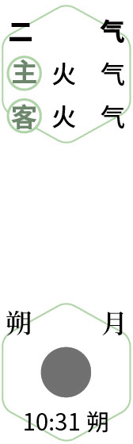
赏味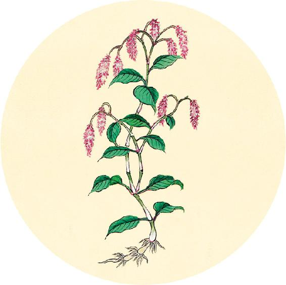
二候反思
前一个月之内是否出现：
脸色发红 □ 是 □ 否
血压升高 □ 是 □ 否
迎风流泪 □ 是 □ 否
如果有两个答“是”，可继续吃两周清明菜（田艾），可以煮粥食用。
【释义】关好门窗（避免外界打扰，专心致志地诊病），向病人详细询问病情，取得他的信任（使他愿意如实地主诉病情，这样才能全面了解病人的情况，避免误诊）。
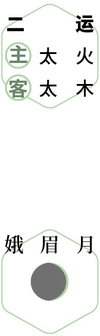
兰汤沐浴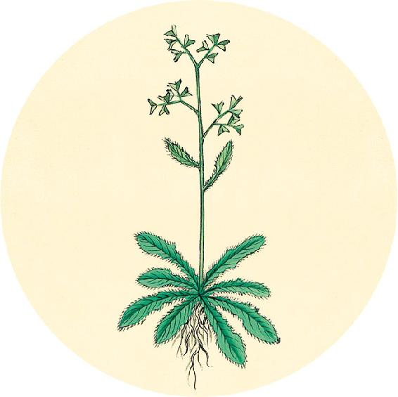
健康提示
今天是上巳节（“三月三”），按传统习俗，这个节日可以这样过：
1. 兰汤沐浴：以藿香、佩兰、苍术等香草洗浴，能化湿气、防病毒，使身体散发香气，久用还可使皮肤透白。
2. 曲水雅集：在水边游玩，举行雅集。
3. 吃上巳菜（荠菜）：“三月三，荠菜赛仙丹。”这时候的荠菜已开花结籽，药性最好。
上巳节的食方：荠菜鸡蛋汤（做法见4月15日、4月16日）。
得神者昌，失神者亡。
——黄帝内经·素问·移精变气论
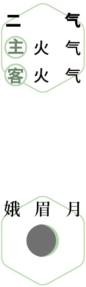
雅集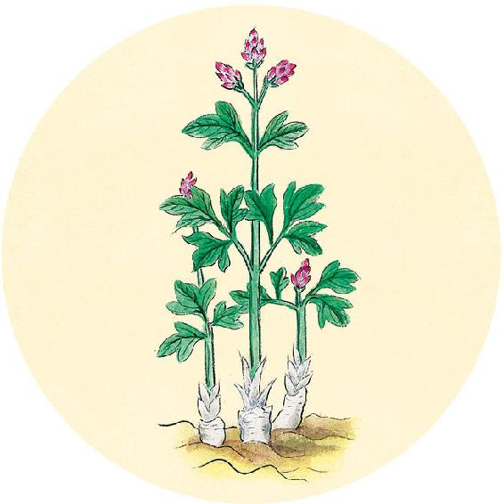
节日食方
上巳节的食方：荠菜鸡蛋汤（上）
原料：荠菜（最好是连根带籽的老荠菜）1大把、鸡蛋6个、红枣12个、带皮生姜6片。
做法：
1. 将整株荠菜连根放入锅中，上面放整个的鸡蛋、红枣、生姜片，加水煮开。
（4 月16日继续）
【释义】如果病人面色光华、脉息平和，这叫“得神”，预后良好；如果病人面色发暗、脉不应时，这叫“失神”，预后不佳。
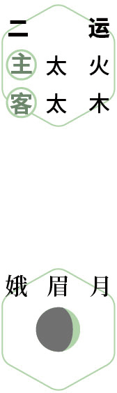
食荠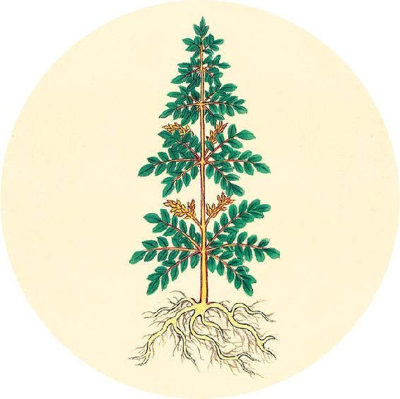
节日食方
上巳节的食方：荠菜鸡蛋汤（下）
2. 用勺子轻轻地敲击鸡蛋壳，使它产生裂纹，以便更好地入味。
3. 继续煮10分钟，关火，闷10分钟。
4. 晾温后起锅，吃蛋喝汤。
功效：祛陈寒、调和脾胃功能、增强体质，也适合血压高的人日常保健。
黄帝问曰：为五谷汤液（汤液指用五谷杂粮煮成的米汁。）及醪（láo）醴（lǐ，醪指浊酒。醴指甜酒。）奈何？岐伯对曰：必以稻米，炊之稻薪，稻米者完，稻薪者坚。
——黄帝内经·素问·汤液醪醴论
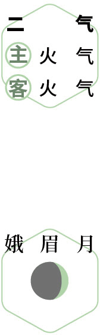
防病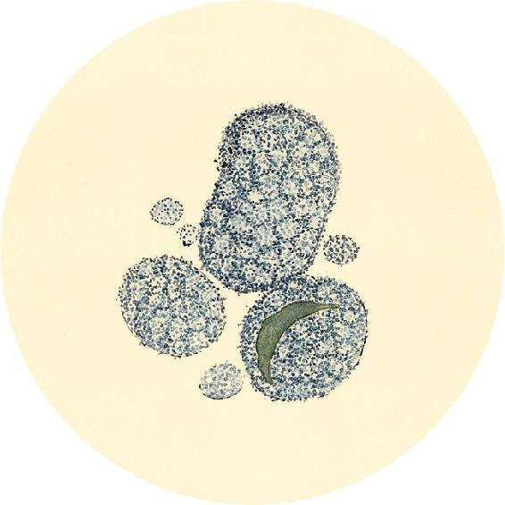
健康提示
每年的4月15日至21日是全国肿瘤防治宣传周。
预防肿瘤癌症，生活方式和饮食很重要。
许多常见的养生食物都含有预防肿瘤的成分，例如：
蒲公英根、牛蒡、金银花、葛根、陈皮、木耳、松茸、藜麦。
【释义】黄帝问道：怎样用五谷来制作汤液和酒呢？岐伯答说：一定要用稻米，并烧稻秆来煮。因为稻米营养充足，稻秆又很坚劲。
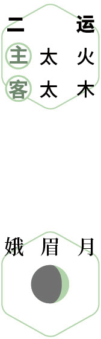
问茶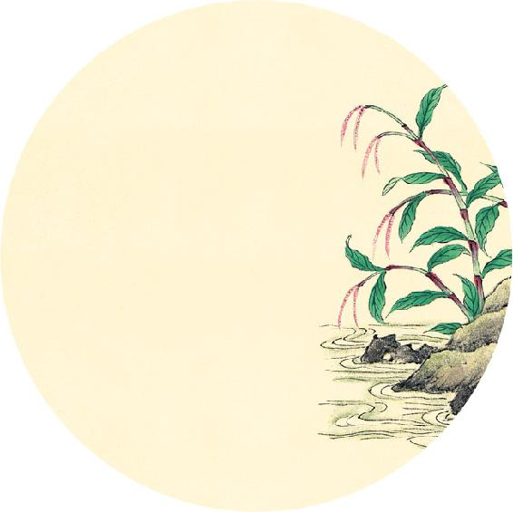
食材准备
后天进入谷雨节气。
1.节气茶方
原料：陈皮、蜂蜜、绿茶。
2. 辛丑岁二气保健方：加味果菊清饮（从春分吃到小满前日，做法见3月30日）
原料：蒲公英根、牛蒡、罗汉果、菊花、鱼腥草。
3. 辛丑岁全年保健粥：莲杞顺时粥（做法见2月11日）
原料：枸杞子、莲子、炒荷叶、川陈皮、茯苓、粥料。
帝曰：何以然？岐伯曰：此得天地之和，高下之宜，故能至完；伐取得时，故能至坚也。
——黄帝内经·素问·汤液醪醴论
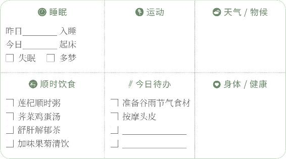
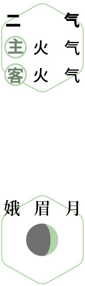
静养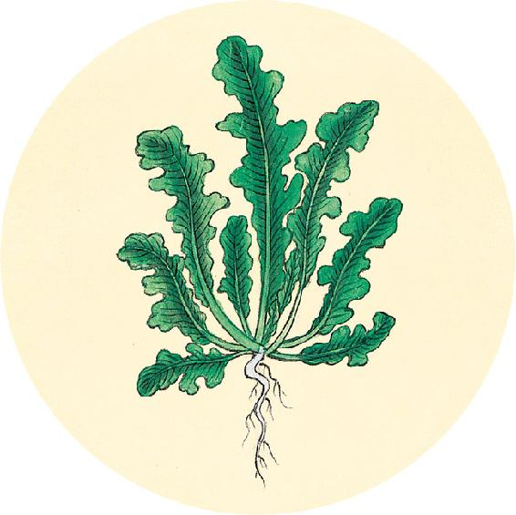
节气总结备
喝舒肝解郁茶的次数________
吃清明菜的次数________
喝莲杞顺时粥的次数________
喝加味果菊清饮的次数________
户外运动的次数________
是否郊游踏青 □ 是 □ 否
身体哪些方面有改善________________________________________
【释义】黄帝说：为什么是这样呢？岐伯说：稻谷得天地和气，生在高低适宜的地方，所以营养充足；又在合适的季节收割，所以稻秆最坚实。
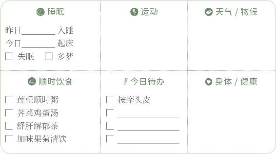
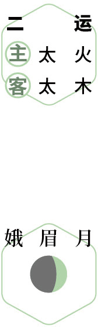
观萍